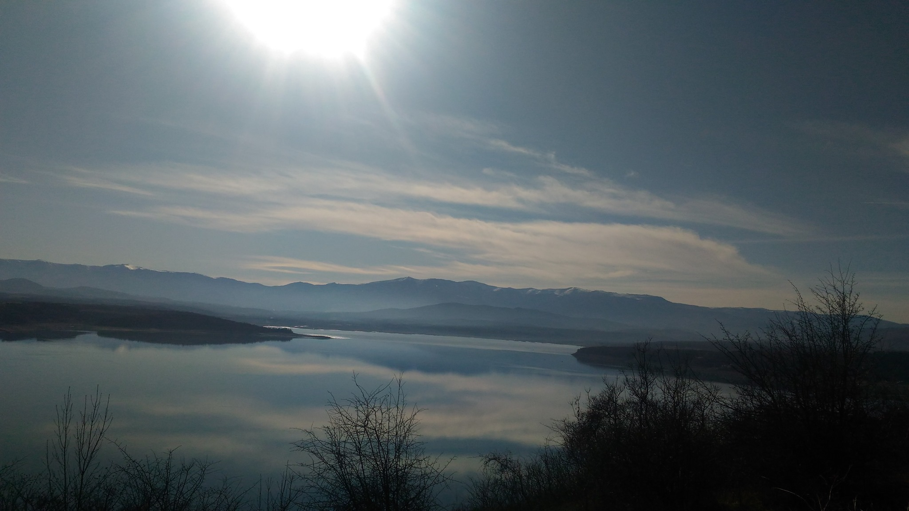
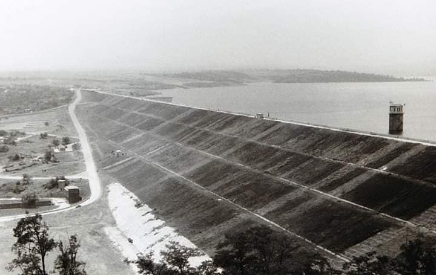
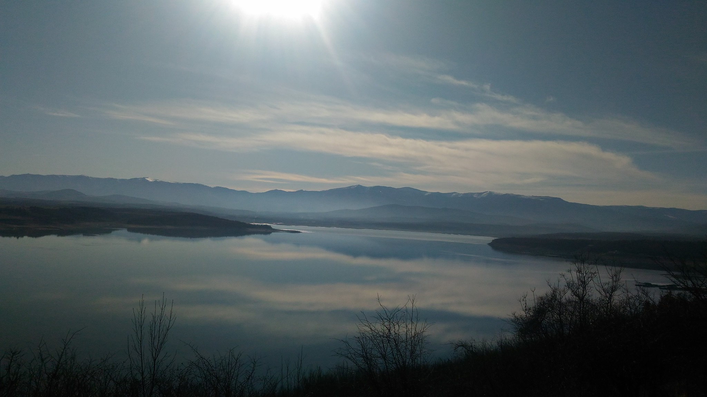

Язовир "Огоста"
„Огоста“ е язовир в Северозападна България, четвъртият по площ и втори по
обем изкуствен водоем в страната. Събира водите на реките Огоста, Бързия и
Златица, и се намира на 600 метра югозападно от крайните квартали на
Монтана, на 60 метра над нивото на града. Водосборният басейн е с площ 948
км2, а самият язовир заема площ от 23,6 км2. Средногодишната водна маса е
384 млн. м3, а общият обем – 506 млн. м3. Строителството на язовира трае 20
години и завършва през 1986 година. Открит е тържествено на 23 септември
1987 г. Под водите му остават две села, чиито жители са изселени в Монтана и
Берковица – село Живовци, където са родени писателят и художник Иван
Давидков и поетът, писател и журналист Анастас Стоянов и Калиманица, родното
село на писателя Йордан Радичков. Хидротехническото съоръжение е изградено с
цел напояване на големи площи селскостопанска земя, простиращи се от Монтана
до областта Златията край Лом, но до 1989 година е прокарана едва половината
от необходимата тръбна инфраструктура и тя така и никога не е изградена
докрай.

Строителството на язовира трае 20 години и завършва през 1986 година. Под
водите му остават две села, чиито жители са изселени в Монтана и Берковица —
село Живовци, където са родени писателят и художник Иван Давидков и поетът,
писател и журналист Анастас Стоянов и Калиманица, родното село на писателя
Йордан Радичков. Гигантското хидротехническо съоръжение е изградено с цел
напояване на големи площи селскостопанска земя, простиращи се от Монтана до
областта Златията край Лом, но до 1989 година е прокарана едва половината от
необходимата тръбна инфраструктура и тя така и никога не е изградена докрай.


Понастоящем водата от язовира почти не се използва за напояване, а за
производство на електричество в двете водноелектрически централи –
„Кошарник“ и „Огоста“, разположена на язовирната стена. Язовира е определен
за аквакултури и любителски риболов. Разнообразието на рибата в него е
голямо: шаран, каракуда, червеноперка, платика, костур, скобар, мряна, сом,
щука, уклей, бяла риба. Още от момента на пускането си в експлоатация,
язовирът буди съмнения, че е опасен за разположения в непосредствена близост
областен център и околните села. Местният клон на движение „Екогласност“
пуска до съда множество жалби, свързани със стабилността на язовирната
стена. Със становище да се направи изследване на стената излиза Борислав
Великов по времето, когато е председател на Народното събрание. От 2003
година язовирната стена се охранява от жандармерия.

Още от момента на пускането си в експлоатация, язовирът буди съмнения, че е
опасен за разположения в непосредствена близост областен център и околните
села. Местният клон на движение „Екогласност“ пуска до съда множество жалби,
свързани със стабилността на язовирната стена. Със становище да се направи
изследване на стената излиза Борислав Великов по времето, когато е
председател на Народното събрание. От 2003 година язовирната стена се
охранява. Мнозина от местните хора смятат язовира за бомба, надвиснала над
града. Други пък са доволни, че имат място за почивка през лятото, че има
гларуси, които да ги будят сутрин и да им създават впечатление, че са на
морето.
Начало